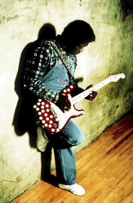
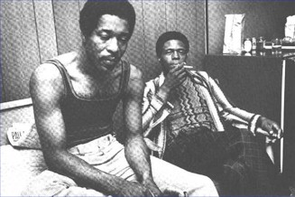
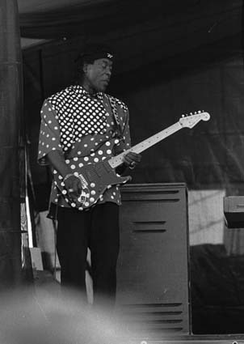

I GOT THE BLUES FROM MY HEAD DOWN TO MY SHOES - Я В
БЛЮЗЕ С ГОЛОВЫ ДО НОГ -
I GOT THE BLUES FROM MY HEAD DOWN TO MY SHOES - Я В
БЛЮЗЕ С ГОЛОВЫ ДО НОГ -(с) А.В.Евдокимов. Перепечатка и
распространение в коммерческих целях запрещена.
С предложениями обращаться по адресу fedor@blues.ru.
| Автор выражает глубочайшую сердешную и
искреннюю признательность московскому
подразелению BMG International за помощь в подготовке к
празднованию юбилея BG. BMG, ребята, распространяет
продукцию Silvertone, на которой с 1991г. пишется Бадди
Гай, и BMG же принадлежат ныне архивы фирмы CHESS.
Стало быть, без пособничества BMG все это были бы
записки малоинформированного человека. Еще раз: СПА-СИ-БО, BMG de Moscou!!! |

BUDDY GUY:
I GOT THE BLUES FROM MY HEAD DOWN TO MY SHOES - Я В
БЛЮЗЕ С ГОЛОВЫ ДО НОГ -
БАДДИ ГАЙ
| Блюз наполнен парадоксами, и то, что
самому современному среди нынешних блюзмэнов
исполнилось 60 - у знатоков не вызывает удивления.
Хотя на вид не угадать, сколько ему лет! Среди
пузатых королей блюза он - стройный парень, как
судила ему судьба (guy - парень англ.), кудрявый, в
рабочем комбинизоне, с именным, раскрашенным в
веселенький белый горошек, Stratocaster’ом в руках. Бадди Гай, всемирноизвестный блюзмэн, живет в Флурсмоне (это к югу от Чикаго) с женой и двум младшими детьми-подростками, самостоятельный старший уже сделал его дедушкой. Золотые и один платиновый альбом украшают дом Бадди Гая, вместе с четырьмя премиями Грэмми (Grammy) - за три подряд его последние альбома и участие в "Tribute To Stevie Ray Vaughan" - и Наградой Столетия (Century Award) от журнала Billboard... И несчитанное колличество премий блюзовой академии имени W.C.Handy... Гитара Fender/Stratocaster именной модели - Buddy Guy... И именной же BUDDYGUY.COM в Интернете... Издана в 1993г. книгой в суперобложке его автобиография и переиздается по сей день карманными изданиями... Популярнейший чикагский клуб Buddy Guy’s Legends стал местом паломничества туристов со всего света, приезжающих в Ветренный Город, как в мекку блюза и направляющихся к нему, как к лорду-хранителю чикагской блюзовой печати. Есть с чем достойно встретить 60-летний юбилей! Впрочем, если представить, что в праздничный день, 30 июля 1996г., когда разошлись гости, юбиляр собрал вокруг себя отпрысков, детей и внуков, дабы рассказать им о жизни, он говорил о капризах и причудах судьбы и, вероятно, больше о каждодневных ее превратностях, нежели о редких благостях. Может, он напомнил сыну их разговор пятилетней давности, о котором он рассказывал в журнале Guitar Player. BG: У меня есть сын, который хочет научитьс играть на гитаре, так он даже не подошел ко мне, чтобы я ему показал, что и как. Каждый раз, когда мы садимся с ним в машину, он врубает Принца; он хочет быть как Принц. Я ему говорю: “Замечательно! Но разве не стоит послушать и других гитаристов? Он говорит: ”Типа?” - “Дл начала - Хендрикса.” В конце-концов он запал на Хендрикса, и где-то откопал интервью, в котором Хендрикса спрашивают, откуда он берет некоторые свои ходы (licks), а тот отвечает - у Бадди Гая. На следующий день сын приходит ко мне и говорит:”Пап! Ты мне должен показать, как это играется; я же не знал, что ты это умеешь. Я думал, что ты просто играешь блюз.” Я - ему: ”Так это же и есть блюз.” В общем, я включил усилитель - и с тех пор мне приходится возиться со всеми его друзьями, потому что он всем им сказал: “Старик в этом деле волочет.” Вряд ли среди сегодняшних юнцов, стремящихс играть на гитаре, пусть даже кумиром их будет любой имярек в люрексе, найдется больше двух, кто не знает, что Бадди Гай “волочет”. За последние пять лет имя Гая - регулярно появляется не только в гитарных журналах, но и в списках самых горячих пластинок. И его нынешнее признание кажетс просто чудом, поскольку шесть лет назад казалось, он навсегда остался в далекой истории Золотой поры чикагского блюза. Даже знатоки (те, кому редко доводилось заезжать в Чикаго, где Бадди Гай продолжал выступать) считали его то ли отошедшим от дел, то ли и вовсе в мир иной... Все изменил выход в 1991г. альбома Damn Right I Got The Blues (Да, Черт Побери, У Меня Есть Блюз), которому предшествовали 12 лет без единой студийной пластинки! Какие уж там награды и премии... В интервью Rolling Stone, вышедшему буквально за день до триумфа альбома, Бадди Гай говорит о бедственном положении его клуба, о трудностях с гастролями, о том, что пора на покой... Ни малейшей надежды на успех. ...Поздняя удача - слова напрашивающиеся. Вот только Бадди Гай не делит свои сорок лет профессионального музыканта на удачные или провальные. С самых первых лет ученичества на проволочной гитаре, стажерства у великих, через первые успехи и десятилетия клубных гастролей - все это были годы блюза. Damn right! I got the blues from my head down to my shoes. Но он и брал в руки гитару вовсе не для того, чтобы искупаться в миллионах. Это сейчас мальчишки видят, что гитара может открыть путь на вершину мира и жить, получая money for nothing and chicks for free. Когда Бадди Гай был мальчишкой, “звезд” с гитарами наперевес просто не было, а Фрэнк Синатра был единственным, кому музыка принесла миллион (девиц и долларов). Где родился и рос Бадди Гай - гитара была спутником по жизни. Иногда - способом прокормиться, не утруждая себя тяжелой работой на хлопковых плантациях. Но чаще - чистой любовью. Свою детскую тягу к гитаре ничем иначе, как любовью с первого взгляда, Гай не сможет объяснить. Родился он 30 июля 1936 года. Рос на плантации в Луизиане, в домишке как спичечный коробок, увеличенный под человеческий рост. Четыре тонкие стенки меж плоской крышей и полом на земле - брошены на плоский стол равнины под выцветшим от солнца небом как беленый потолок. В его детстве не было ни пластинок, ни даже радио, поскольку в коробок не подвели электричества. Но зато приходили бесплатные посылторговские каталоги, в которых, среди рекламы рабочих джинсов и пачек крупы, публиковались и рисунки гитар на продажу. Бадди Гай не спешил заполнить квиток с заказом. Платить все равно было нечем. Бадди Гай всаживал штакетину в пустую банку из-под керосина, приторачивал к ней леску, вытянутую из сетки от москитов, прикрывавшей окна. И тренькал на ней в любую свободную минутку. (“А комары у нас в Луизиане такие,- рассказывал Бадди Гай, - могли хоть теленка в лес утащить”). Бедность в доме царила неописуемая. I have plowed so hard, baby, corns have got all in my hands. (х2) Я пахал так упорно, лапа, что зерна вошли мне в ладони. I want to tell you, people, it ain’t nothin’ for a poor farmin’ man. Я вам так скажу, пипл, ничегошеньки не светит бедному фермеру. (Cotton Crop Blues - “Блюз по хлопковому урожаю”. 1953) Но как-то выдался урожай, и год удалось закончить, не влезая в долги. Тогда отец Бадди нашел какого-то дядьку с побитой гитарой и купил ее для сына - за 2$. Вот тогда-то Бадди и научилс узелком связывать порванные струны - новые было не на что купить. Он вспоминал, что на его гитаре были струны с тремя и четырьмя узелками. И, как он ни старался себя сдерживать - начиная играть, забывал обо всем. И снова рвал струны. Как рвет их по сей день - вытягивая блюзовые ноты, оставаясь молодым. Шоком стало появление в доме радио, как и появление в ближнем селе Лайтнинг Слима (Lightnin’ Slim). BG: Когда я впервые увидел Лайтнинг Слима с
электрогитарой, я хотел подойти выдернуть
провода, потому что я думал, это шутка. Было
воскресенье, солнце Луизианы уже собралось на
закат. Лайтнинг Слим показал, а радио открыло мир нового электрического блюза. На средних волнах, если только не гроза, можно было поймать блюзовые радиопередачи, которые вели Сонни Бой Уилльямсон или БиБиКинг. Никто никогда ничему не учил Бадди Гая. Не было музыкантов среди его родственников или знакомых, как не было в округе музыкальной школы. На той ферме он был один на один с гитарой, у которой почти всегда не хватало струн (и иногда он вновь пытался заменить нехватку проволокой). Он копировал пластинки. Как-то, когда ему было лет 14, по радио он услышал хит John’а Lee Hooker’а “Boogie Chillen”. Гай начал искать этот фирменный хукеровский звук по всей гитаре - братья и сестры в конце концов выгнали его из дому, так он донял их своими настойчивыми, но бесплодными попытками. И вот он сидел на поленнице, сам уже то ли задремав, то ли в полуотключке, но продолжал играть. И вдруг пробудился, услышав, что пальцы тем временем сами нащупали и ухватили хукеровскую формулу. И он повторял эту простейшую пальцевую фигуру часа два-три, чтобы затвердить намертво. Боялся, что если забудет, снова уже не найдет. (А записать? - Кто же мог знать, что можно “записывать” музыку?) Это еще было на той двух-трехструнной гитаре. На ней он достиг немалых успехов. Однажды на заваленке он тренькал на своей побитой трехструнке, мимо проходил человек. Он постоял, послушал. Сказал: ”Завтра будь здесь, купим тебе гитару”. И не соврал, на следующий день отвел Гая в магазин, тот выбрал гитару - “Harmony”, акустика, 55$. Человек оплатил покупку. И исчез. Незнакомцы появлялись в судьбе блюзового BG, в самых критических ее точках. BG: А мои родители говорили: ”Конечно, раз так хочешь, учись играть на гитаре. Но не забывай, что нужно ходить в школу, если хочешь стать доктором или юристом - тогда тебе не придется бороться за то, чтобы выжить.” На первый звукосниматель он копил деньги сам, полгода разносил соседям товары из бакалейной лавки. Бадди Гай нынче вовсе непьющий, да никогда особенно и не увлекался... Но дважды угощение выпивкой сыграло роль стартера в его карьере. Школьником Гай уже вполне достойно играл блюзы Lightnin’ Hopkins’a, John’a Lee Hooker’a и T-Bone Walker’a. Но об этом знали только самые близкие его друзья, сам он был слишком стеснителен, чтобы выступать перед незнакомыми людьми. Спасибо одному из школьных друзей - он чуть ли не силком затащили Гая в местный клуб и подпоил так, что Гай едва помнит, как вышел на сцену и спел песенку Hank’a Ballard’a. И к его огромному удивлению - хозяин клуба предложил ему постоянную работу. По-началу в трезвом виде он выступал, сидя на стуле лицом к стене и спиной к залу. Гай признавал, что только отсутствие конкуренции помогло ему сохранить эту работу, пока, опять же с помощью виски, он не научилс преодолевать страх перед публикой. Но это все-таки еще не вполне то, что называетс “профессиональный дебют”. Гай продолжал работать на ферме, приработок по выходным в баре позволял покупать пластинки, которые он усердно изучал и копировал. О его настойчивости можно составить представление хотя бы по истории с Boogie Chillen. И в сочетании с любовью к блюзу настойчивость не могла не принести свои плоды. Гай становится местной знаменитостью, записывает на местной студии пару песен, и в 1957г., 20 лет отроду, отправляется покорять Чикаго. (Вполне возможно, гитара, с которой он намеревался поразить столицу блюза, была столь же эффектна в глазах знатоков, как в глазах гвардейцев - та лошадь, на которой Д’Артаньян въехал в Париж). Далее - по интервью, предоставленному фирмой BMG. BG: Шел мой третий день в Чикаго, я мечтал только об одном - раздобыть монетку, позвонить маме и попросить ее выслать мне денег на обратный билет. У меня была гитара, но, знаете, каким бы я ни был голодным, гитару я не продам. Тут мен остановил один человек. Он спросил, имея ввиду то, что у меня в руках гитара, умею ли я играть блюз. Он сказал, что если я ему спою, он мне купит выпивку. Я сказал, спою - только не надо випивки, купи мне сэндвич. Он сказал, Бог весть, кто ты такой и откуда взялся, кормить я тебя не стану, а налить - налью. Налил. На пустой живот бедолагу Бадди Гая так проняло, что он сыграл незнакомцу все песни, которые знал, а потом “и еще пару”. Бог весть, кто был тот незнакомец, но он решил, что ненапрасно потратился на угощение, и отвел Бадди Гая в какой-то клуб, сказав его владельцу, чтобы тот выпустил Гая на сцену. На сцене работал Отис Раш. Он дал шанс новичку. Как он - пьяный и голодный - играл в тот вечер, Бадди Гай не помнит. Однако после концерта ждал его у дверей клуба огромный черный кадилак. Другой, авторитетного вида, незнакомец, сказал ему: ”Садись и ешь!” - и вручил пакет с бутербродами. Узнав, что благодетеля зовут Мадди Уотерс (блюзы которого Гай знал наизусть, но впервые видел в лицо), Гай высказал какую-то искреннюю куртуозность, вроде: ”Если ты - Мадди Уотерс, то мне не нужно еды, я и так более чем сыт и счастлив.” Мадди Уотерс на это звезданул Гая по спине так, что с него весь хмель слетел (А маддиуотерсовские оплеухи памятны еще многим чикагским блюзмэнам второго поколения.), и сказал: ”Я на эту фигню не куплюсь. Давай лопай!” Оказывается, кто-то позвонил из клуба Мадди Уотерсу, сказал, что в город приехал с юга новый парень, которого стоит послушать. Такие уж были дни в Чикаго - повсюду шли “гитарные дуэли” и состязания, всем было интересно все новое, а суждения авторитетов, вроде Диксона или Мадди Уотерса, о чем-то или ком-то новом, ждали все. И Мадди, конечно, не поленился - поехал. (“Мне в этой истории особенно нравится великое знание жизни Мадди Уотерсом: он понимал, что новичку с Юга в Чикаго первым делом понадобятся бутерброды.” - Из книги Ф.Дэвиса “The History Of The Blues”. Мне тоже это нравится.) Мадди Уотерс устроил Гая на ночлег, а затем обеспечил музыкальной работой - в качестве акомпанирующего музыканта в студии Чесс. В следующем году Гай уже записал для фирмы Artistic два сингла. Но главное - он встретил братьев по блюзу и был принят ими как свой. BG: После того, как я увидел этих ребят на концерте, я сказал себе: забудь что знал, учись заново. Как они играли! Я смотрел на Гитар Слима, какие он устраивал представления! Но что его игра была в сравнении с игрой Отиса Раша, или Мэджика Сэма, или Ирла Хукера. Слушая их, я понял, что нужно учиться сначала. Они усаживались в кресло и играли на гитаре так, как на гитаре нужно играть... А в то время многие играли сидя. И многие только слушали блюз. Мало кто танцевал, а в местах вроде Клуба 708 вообще не было танцевальной площадки. Ты туда приходишь - полиция там всегда - и ты просто садишься и слушаешь Отиса или Мадди, кто там играет... А играть приходилось “40/20”. Сорок минут играешь, двадцать отдыхаешь - как требовал профсоюз. Только понастоящему начнешь врубаться в Отиса, или Мадди, как они уходят на двадцатиминутный перерыв. И я вроде как говорил про себя:”Быстрее, двадцать минут, проходите, чтобы я смог увидеть Мадди”. В то время, кажется, мы все были гораздо более близки между собой, чем теперь. Я хочу сказать, что не было и речи о том, чтобы отправиться спать, если я знал, что в ту ночь где-то играет Отис. Единственное, почему мог пропустить его выступление, или Мадди, или Ирла Хукера - это когда сам работал концерт. И наоборот, во время моего выступления я глядел со сцены и видел в зале Мэджика Сэма, или Фредди Кинга или Отиса. Мы просто ходили друг за другом. Благодаря этому я научился большему, чем знал! Теперь молодые приходят на концерты, и у многих такое отношение, мол, это все мы давно знаем. А бы посоветовал слушать повнимательней. Мне очень помогло то, что я был хорошим слушателем. Стоит Бадди Гаю начать говорить о тех временах - и он не может остановится, вспоминая молодость, до краев полную блюзом. BG: Я отправлялся по городу в надежде найти, где играют Мадди, Вулф или Уолтер (Horton), кого-нибудь из них. И часто не мог до них дойти, потому что в каждом третьем доме был кабак, в котором играла группа из трех человек, и они так здорого звучали, что я останавливался послушать... Джаз. блюз, все, что хочешь. В то время платы за вход не взимали. Кондиционеров в таких барах не было, и летом двери были нараспашку, так что слышно было издалека. Хороших гитаристов было очень много. Большинство из этих ребят так никогда и не стали знаменитыми. Одни запили, другие женились. А содержать семью, когда ты зарабатываешь полтора доллара за вечер, а бутылка виски стоит два-пятьдесят... Наверно, года три для меня прошли без уикэндов, потому что эти бары были открыты всю неделю и ночь напролет, и всегда были полны; сталелитейные заводы работали круглосуточно, и работяги после смены в семь утра заглядывали в бар пропустить по кружечке пива, прежде чем отправится домой спать. А по воскресеньям днем у нас были гитарные бои (Guitar battles). Их устраивали по многих клубах, с бутылкой виски в качестве приза. Но, кто бы ни выигрывал, ему самому редко доставалось больше глотка, потому что тут вокруг сидели твои друзья, они за тебя болели, значит и... Это, важется, Лютер Эллисон, я, Отис Раш, Мэджик Сэм, Ирл Хукер - мы все “сражались” - Но время от времени, когда подходили Мадди, или другие, это было как (серьезным тоном): “Все, ребята, джем-сейшин окончен. Теперь слушаем учителя.” Хотя послушав, как эти ребята, Мадди и другие, поют, я уже и вовсе не хотел открывать рот. Они даже когда говорили, их речь звучала словно пение. Домом чикагского блюза была в ту пору фирма Chess, созданная для увеселения черной чикагской рабочей силы братьями Чесс, детьми еврейских эмигрантов из Словакии и Польши. Как все в блюзе соткано из противоречий, так и свои взаимоотношения с Чесс Бадди Гай вспоминает с благодарной горечью. Чесс дали ему возможность стремительно войти в элиту блюза. Гай выступал по клубам в ансамблях Хаулин Вулфа, Мадди Уотерса и Санни Боя Уилльямсона. Сам Уилли Диксон, крестный отец чикагского блюза и A&R man (по сути - художественный руководитель) фирмы, обеспечивал его студийной работой и брал в европейские гастроли легендарной сборной программы “American Folk Blues Festival” (AFBF). BG: На “Chess” не было того, что называют “студийным ансамблем”. Обычно тебе звонили в середине ночи, потому что кому-то понадобилась ритм-гитара. На запись (ныне классического блюза) Killing Floor Хаулин Вулфа меня подняли в шесть утра, когда я приехал, кто-то сонно набормотал мне в ухо мотив - и все, запись пошла. Может быть, у меня был шанс много записываться с ними потому, что они знали, что, когда я играю за спиной Мадди, мне даже не нужно, чтобы кто-то знал, что это был я. Мне достаточно было, что у меня мурашки бежали по спине от одного сознания, что я на записи с Мадди, или Вулфом, или Уолтером, Санни Боем, или другими людьми, как эти. Музыка тогда была большой любовью, а не большими деньгами. Когда я училс играть на гитаре, я не мог поднять голову, чтобы увидеть, как в звездной вышине Принц, или Эрик, или Кейт закалачивают большие бабки игрой на гитаре. Просто нужно было любить эту штуку, чтобы играть на ней. Мы учились играть на гитаре из любви к гитаре, не из любви к деньгам.
BG: Леонард Чесс позвонил Мадди и сказал, что студентики западают на акустический Блюз, они его называют Народным (Folk), так что нужно быстренько что-нибудь такое. Чесс хотели, чтобы Мадди немедленно отправился в Миссиссиппи и нашел кого-то из старцев, кто умел играть такое. Мадди ответил: “Записываемся завтра”. Когда на следующий день я появился в студии, Леонард пустился обзывать меня как только можно, сказал: ”Ты,****, вали отсюда!” А Мадди всем велел заткнуться и слушать. Ведь это и был тот самый блюз, который я узнал раньше всего!.. До сих пор помню, как Леонард стоит в режиссерской будке с отвисшей до пола челюстью. Мне вспоминается, что все на Чесс писалось на четыре дорожки. Кое-что можно было переналожить, но мы не особенно этим пользовались. В основном песни записывали, играя все вместе, Мадди обычно сидел в углу; услышать, что он пел, было невозможно, ты должен был просто чувствовать это. После записи единственной обработкой было, когда брали бритву и вырезали, если где-то кто-то слажал. Если песня получалось длинноватой для сорокопятки, вырезали соло. На Stone Crazy я сыграл длинное соло. Когда я услышал пластинку - на ней его не было!.. Мне тогда, наверное, года 23 было. Сколько было Мадди или Вулфу? Я не знаю; я мог поддразнивать Джуниора (Junior Wells, junior - младший) возрастом, но их я не смел спросить. Они бы меня в клочки разорвали.
BG: Я постоянно упрашивал Чесс и других, пожалуйста, сделайте мне пластинку. И ничего не получалось. Полгода я репетировал с Уилли Диксоном песню под названием "Same Thing" - "То же самое". Он заказал для меня студию. Я пришел туда в 9 утра. И вдруг входит Леонард Чесс и, грязно ругнувшись, говорит, эта, блин, пластинка не про тебя. Она будет Мадди Уотерсу. Пошли, позвонили... Мадди приехал в студию через час. Мадди надевает наушники, смотрит на меня и говорит, негрязно ругнувшись: "Ты тоже на ней будешь играть, сукин сын!". (Тут Гай в рассказе изображает свои восторженные крики.) И я на ней сыграл. Он мне потом говорит, мы найдем тебе песню, чтобы ты записал пластинку. И мне нашли песню "My Time After Awhile - Мое время еще придет". Когда я записывал эту пластикну, Роллинг Стоунз стояли у стены в ожидании автографа - так я с ними и познакомился - в 1964м. Этот фрагмент интервью Бадди Гая - из его видеоконцерта 1996г. Память ли несколько подводит, или он имеет ввиду первую запись, дошедшую до винилового тиража - но на самом деле он записывался в студиях Chess как солист с 1960 года. Одним из первых был записан признаный ныне классикой "The First Time I Met The Blues - Первый раз, когда я встретил блюз" сочинения все того же Братишки Монтгомери (Little Brother Montgomery).
Когда в 1965г. вместе с AFBF Бадди Гай побывал в Англии, где как раз блюзовый бум поднимался в высшей своей точке, он познакомился и подружилс с “шумными distorted гитаристами”: Эриком Клэптоном и Джефом Бэком... Европейская молодежь принимала его очень хорошо. Исполнительская экцентрика тех лет вполне соответствовала почерку Бадди Гая. Он был мастак играть на гитаре и барабанными палочками, и носовым платочком, и закинув ее себе на загривок... Он бродил по всему залу, подключив к гитаре рекордный по длинне шнур - трюк, который он перенял у Гитар Слима. И обожал, свернув громкость почти до ноля, бормотать куплет за куплетом, пока публика не начала тянуть шеи, дабы расслышать хоть что-нибудь - вот тут-то Гай врубал звук на полную мощность и блюзовым акордом атомной мощности размазывал зазевавшихся по противоположной стене. Но гастроли кончаются, На родине Гай вернулся к обязанностям дежурного гитариста в студии Чесс, а чтобы прокормить семью подрабатывал рабочим на стройке. BG: Однажды летом, году в 1967м, в том году, когда в Чикаго была страшная снежная буря, ко мне подошел Дик Уотерманн, менеджер Бонни Рэйт (Bonnie Raitt), и сказал:”Разгружая грузовики, ты запросто можешь потерять палец, и тогда уже никогда не будешь играть на гитаре.” Я сказал, ну так что? мне же нужно кормить семью, а сейчас гитаристам ничего не платят. Уотерман все же уговорил Гая съездить для пробы на Канадский блюзовый фестиваль, где овации 30-тысячной аудитории убедили его в нужности музыкальное его карьеры.
BG: Первый Strat я увидел еще до Чикаго, когда Гитар Слим выступал у нас в Луизиане. Потом, когда я приехал в Чикаго, я увидел, что Отис, Мэджик Сэм и Фредди Кинг тоже играют на нем. Это был тип гитары для нас, в сравнении с тем, на чем играли Мадди и Сон Хаус, и другие. Они играли на акустике, многие из них установили звукосниматель прямо на свою акустическую гитару - Элмор Джемс, например, который продолжал играть на гитаре с очень большим корпусом... Мне прежде всего понравилс звук Stratocaster’а. Но я обнаружил еще, что, если его уронить, или на него что-то уронят, он остаетс целым. И за это я его еще больше полюбил. Потому что чаще всего у меня не было никакого футляра, и мне нужно было нечто прочное на разрыв и удар. Потому что, если я с трудом мог позволить себе новые струны, новую гитару я себе и вовсе не мог позволить. В то время ее можно было украсть только вместе со мной - я спал с гитарой. Итак, Бадди Гай справился с непостижимой задачей - он воспроизводил характерное звучание лучшего в блюзе маэстро гибсоновской гитары - на Стратокастере. Не единственный его трюк! Как и БиБиКинг, Гай жалуется, что никак не мог научитс играть слайд, и тогда попытался придумать нечто, максимально близкое по звучанию - и он вытягивает (bend) струны, “раскачивая” ноты так, что на слух не вычислишь, есть ли у него на пальце слайд или нет. Подводя итог альбомам Бадди Гая 60х, можно сказать, что как блюзмэн он уж достаточно созрел, чтобы, при очевидных влияниях, играть свой, а не чужой, блюз. И пусть по яркости и новаторству альбомы эти уступают более интенсивным своим современникам, все же в десятку лучших блюзовых альбомов конца 60х они безусловно и достойно входят. Тем временем и Чесс наконец-то расскачались выпустить на альбоме собрание его записей дл сорокопяток под названием STONE CRAZY.
 В программах AFBF cложился прочный творческий тандем Бадди Гая с чикагским маэстро губной гармоники, ветераном блюзбэнда Мадди Уотерса Джуниором Уэллсом. Гай с прекрасными результатами погостил гитаристом на записи лучших альбомов Уэллса дл фирм Vangard и Delmark второй половины шестидесятых годов. (Спецы спорят, какой - HooDoo Man Blues или South Side Blues Jam лучше, но один из них непременно называют в числе наиболее значимых блюзовых работ десятилетия). Гай и Уэллс решили и в дальнейшем выступать вместе: дуэтом губной гармоники и гитары, освященном блюзовой традицией испокон ХХ века. Бадди Гай пришел к своему индивидуальному стилю, обрел верного союзника в лице более старшего товарища - тут бы работать и работать, но...BG (в интервью 1968г. джазовому журналу Downbeat): Большой успех перекосил бы мою личную жизнь до такой степени, что я не смог бы ходить по улицам Чикаго, встречаться с людьми, которые были так добры ко мне, или играть для детишек моего квартала. Посмотрите на Джеймса Брауна: как он связан успехом по рукам и ногам, как к нему трудно пробиться. Нет я такого не хочу. Просьба была услышана. Начались 70е - самое мрачное для блюза врем ожидания и выживания... Суперзвезды помогали как могли. Эрик Клэптон, собрав звездный ансамбль с участием своих музыкантов и пианиста из Нью-Орлеана Доктора Джона (Dr.John), продюссировал их очередной альбом. Но, записав 2/3 минимального хронометража, Клэптон потерял себя в кокаиновой дымке. И завершение проэкта через два года патронировал белый блюз-рок-н-ролльный J.Geils Band. Результат - BUDDY GUY & JUNIOR WELLS PLAY THE BLUES - не порадовал никого: музыканты не наигрались, покупатели не удовлетворились, выпускавшая фирма ATLANTIC более не считала себя связанной с блюзом (и видимо была рада-радешенька продать этот альбом дл переиздания на компакт-диске фирме Rhino/Atco). Любопытно, что в том же 1972г. Бадди Гай выпустил свой третий и последний альбом для (вскоре обанкротившейся) фирмы Vangard - HOLD THAT PLAIN. Но в связи с мизерным тиражом он прошел незамеченным дл широкой публики. А жаль, он значительно интересней, чем вымученный звездный проэкт. Роллинг Стоунз пригласили Бадди Гая и Джуниора Уэллса открывать концерты их всемирного турне, а Билл Уаймэн (Bill Wyman, бассист Rolling Stones) 28 июня 1974го года лично вышел с дуэтом на сцену знаменитого джаз-фестиваля в Монтре (Швейцария). В выступлении принимал участие пианист Пайнтоп Перкинс, патриарх чикагского блюза, сподвижник Мадди Уотерса. Запись концерта опубликована на спродюссированном Уаймэном альбоме DRINKIN’ T’N’T SMOKIN’ DYNAMITE. Более цельный, чем студийный, этот альбом представляет несколько блестящих номеров, вроде эпически-лирической баллады Бадди Гая на 10 минут с гаком “Ten Years Ago” (в первоначальном варианте, записанном для Chess в 1960г., она шла чуть больше двух минут). И хотя здесь блюз звучал достойнейшим образом и диск получил самые благожелательные рецензии в серьезной музыкальной прессе, однако только более полуторадесятка лет спустя Билл Уайман смог с полной уверенностью сказать: ”Добрые дела всегда окупаются” - лишь переиздание на CD (после прорыва Бадди Гая в 1991г.) вернуло продюссору затраченные средства. Конечно, публика 70х игнорировала блюз. Но часть вины - на потерпевших. Блюзмэны выпускали тогда далеко не лучшие свои работы, и где здесь причина, а где следствие?.. Несмотря на отдельные яркие точки в целом альбомы и Гая, и Уэллса этого периода ни гроша не стоили рядом со страстной самоотверженностью их же работ второй половины 60х. ...И потянулась череда лет бесконечных клубных гастролей. За шумихой новых эстрадных течений блюз казался забытым навсегда...
И промотайте на ускоренной еще 10 лет клубных гастролей! Однако и это не было временем, потерянным даром. Бадди Гай был частым гостем остинских блюзовых клубов, куда (из соображений экономии) можно было приезжать без своей группы, поскольку “местные” знали наизусть весь классический блюзовый репертуар и могли подыграть. Так Гай познакомился и подружился со Стиви Реем Воэном и участниками Double Trouble задолго до того, как их имена стали известны миру. Роберт Крэй говорит: "Был случай, когда я на большом фестивале стоял за кулисами, пока выступал Стиви Рей Воэн, и услышал песню Бадди Гая. Я побежал к сцене, поскольку думал, что Бадди Гай присоединился к Воэну, а такое нельз пропустить. Оказалось, что это Стиви так близко к оригиналу поет песню Бадди Гая. И тут я увидел самого Гая. Он стоял за кулисой, на лице его сияла лучезарная улыбка. А Стиви смотрел на него со сцены, словно говоря: "Это здорого, и посмотри, как молодые ребята в зале кайфуют от этой песни!" BG: Стиви Рей словно сотворил блюз для нас заново. Знаете, этот парень столько сделал! Я говорил ему: "Стиви, ты нашел отмычку от той комнаты, где был заперт блюз, открыл и позвал нас всех". Восьмидесятые напролет SRV уверенно шел к известности, преодолевая и общие тенденции музыкальной моды, и личные слабости. Свой успех он создал сам. Возвращение Бадди Гая на большую сцену и взлет к большей чем когда бы то ни было известности определил новый блюзовый бум, которого сам Гай никак не ожидал. BG: Было время, когда положение блюза пугало. До “Healer”а Джона Ли Хукера и нескольких других альбомов, я был буквально напуган. Я не собиралс бросать играть, но... Для всех, кто не сворачивает с пути, рано или поздно подует попутный ветер. И накануне последнего десятилетия ХХ века, после долгого штиля, ветер в музыкальном мире переменился. Альбом Джона Ли Хукера “THE HEALER” 1989 года стал вехой, отметившей возвращению интереса к блюзу. Как всегда - в кризисные годы за помощью обратились к классике. Хукер и Бонни Рэйтт (попопсовей, но тоже не без блюза) триумфаторами покидали церемонию награждения Грэмми. Их успех открывал дорогу и другим блюзмэнам. Тут как раз и Клэптон вынырнул из кокаиновой дымки. Решив стать филармоническим гитаристом, он в чопорном лондонском зале ROYAL ALBERT HOLL устраивал вечера, демонстрируя разнообразие своих талантов с джаз-роковым комбо, симфоническим оркестром и блюзбэндом. Блюз у Клэптона хороший. Но пресноватый. И дабы сдобрить, добавить остроты он вызывал на сцену истинных посконных сермяжных музыкантов от блюзовой сохи. На первую серию концертов Клэптон пригласил Бадди Гая и замечательнейшего пианиста Джонни Джонсона. Джонсон (Johnnie Johnson) записывал ярчайшие хиты Чака Берри, как солиста его обожали в блюзовых клубах. И только чудом общительный Бадди Гай не познакомился с ним ранее... BG: Клэптон нас в Лондон доставил самолетом, и мы оказались в одном отеле. И вот часов в семь утра мне - звонок: ”Я - Джонни Джонсон”. Я говорю: ”Жду - не дождусь, когда мы познакомимся.” Он говорит: ”Может, позавтракаем вместе?” Я говорю: ”Отлично. Только заскочу в душ, и через полчасика встретимся внизу.” Он говорит: ”Ну, нет. Жди, сейчас я постучу в дверь. Он пришел, открыл чемоданчик и достал оттуда полпинты “Crown Royal”. Я говорю: ”Э, нет. Я давно уже этим не завтракаю. И он рассмеялся. Он ведь и сам давно не пьет. Так встретились два непьющих блюзмэна. И неразлучны в музыке с тех пор. Разумеется, концерты Клэптона были ознаменованы светскими раутами, где тусовалась знать в исконном понятии этого слова с музыкальными и шоубизнесовыми нуворишами. С бокалами шампанского в руке и транквелизаторами в карманах брюк человечки подплывали к Бадди Гаю дабы светски заявить, что играл он гениально, но когда же он наконец-то порадует их студийным альбомом. И в их череде один действительно имел этот вопрос всерьез: почему известные ему альбомы Бадди Гая нисколько не отражают страстной импровизационности его концертов? То был представитель замечательной английской фирмы Silvertone, много пекущейся о ветеранах американского блюза. Гай сказал, что знает причину - и контракт на запись альбома был подписан. BG: Когда я на сцене, я отвечаю за все. Когда я в студии, там со мной кто-то еще. У меня есть тенденция отстраняться. Мне бы давно поправить себя и сказать: ”Либо дайте мне сделать по-моему, либо вообще не стоит делать.” На этом альбоме получил намного больше свободы делать то, что хочу. И он мне нравится гораздо больше чем все, что я сделал прежде. Самостоятельность, предоставленная Гаю, в сочетании с опекой студии в исполнении его пожеланий дали превосходный результат. Наконец-то появился альбом, на котором Бадди Гай выступал полноправным хозяином. BG: Мы уже закончили запись по плану, когда мен спросили, есть ли у меня что-то еще? Я сказал:”ДА, ЧЕРТ ПОБЕРИ, У МЕНЯ ЕСТЬ БЛЮЗ”. И этот парень подошел ко мне и сказал:”Вот и название дл альбома”.
Альбом был обречен на успех. Но масштабы успеха превзошли все ожидания. Конечно, Грэмми в блюзовой категории, премии В.К.Хэнди... Но его “золотой”, а затем и платиновый статус и места в верхней десятке горячих альбомов по обе стороны Атлантике оказались сюрпризом! Это был не успех - триумф. Словно прорвало плотину, за которой удача Бадии Га томилась два десятка лет. Последовали еще два студийных альбома: “FEELS LIKE RAIN” 1991 и “SLIPPIN’ IN” 1994. Пусть не столь удачные в коммерческом плане, они достойное продолжение - в творческом. Здесь нет имен, дающих выход на поп-прессу, но давние блюзовые друзья - здесь: Ray “Killer” Allison (записывавший с Бадди Гаем французскую пластинку 1989г.), британцы Paul Rodgers и John Mayal, остатки Little Feat и сама Bonnie Raitt, и Double Trouble.
BG: Моя жена Дженифер подумает, что я не здоров, если я пропущу хоть один вечер в клубе. Как сражался за то, чтобы клуб работал все эти годы. Теперь дела идут хорошо. Но я понимаю, почему так мало осталось подобных клубов. Моя главная цель - чтобы у молодых был шанс, как он был у меня, и у Мадди, и у Стиви. Я надеюсь, что когда-нибудь про какого-то очень талантливого паренька скажут - его открыли в клубе Бадди Гая. По понедельникам сцена клуба доступна всем желающим. Правда, музыканты моложе 21 года могут присутствовать в клубе только в сопровождении родителей. Из далеких гастролей Бадди Гай возвращается в этот клуб. И к старым друзьям.  BG: Есть у меня друзья и гораздо старше меня. Они на пенсии, дай им Бог здоровья. И когда я не в дороге, они звонят мне первым делом по утру, бывает, еще засветло. Моя жена даже не может ответить “Он спит”, потому что они на этом не успокоятся. Я после этого встаю, получаю свою чашку кофе и газету. Я люблю читать. И я готовлю вкусную еду для себя и моей жены. Она говорит, что я готовлю лучше, чем играю. Все мои дети тоже любят мою стряпню. Потом я что-нибудь делаю по двору. Ну а потом жена мне говорит: ”Ладно уж, иди к своим дружкам, потому что они не оставят меня в покое, пока ты не уйдешь, я устала уже от телефонных звонков. И я еду в город, собираю старичков. Я покупаю им пиво, и сижу, и слушаю. Они напоминают мне времена, когда я бегал по Чикаго, играя Boogie Chillen. “Слушай, сукин ты сын, - говорят они мне, - мы помним, как ты и двух мелодий не умел сыграть. А мы и тогда тебя слушали!”И снова, словно хочет опять спугнуть удачу, Бадди Гай заводит старую волынку. BG: Иногда артисты становятся настолько популярны, что им приходится изолироваться. Пожалуйста, поверьте мне, я никогда не хотел быть таким. Я думаю, случись такое и я бы начал подумывать о том, чтобы бросить играть! Мне бы очень не хватало людей.” Но не так страшна блюзмэну удача. И Бадди Гаю ли этого теперь не знать... |